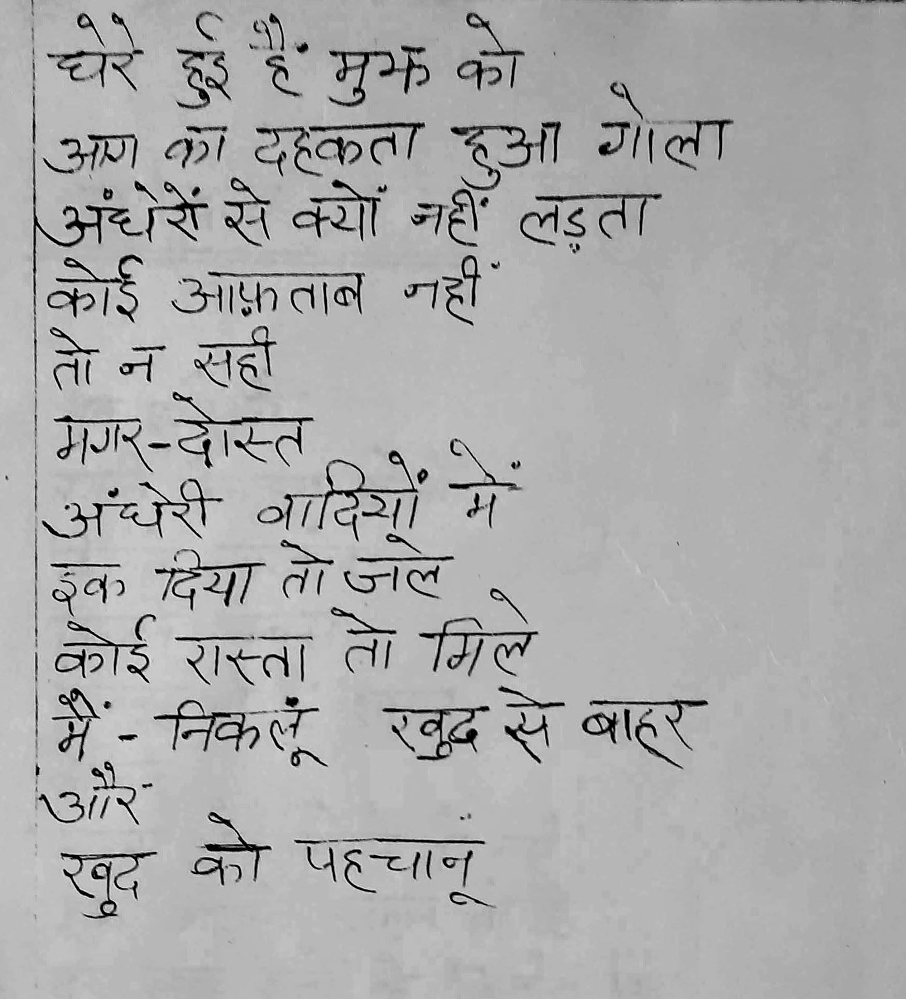
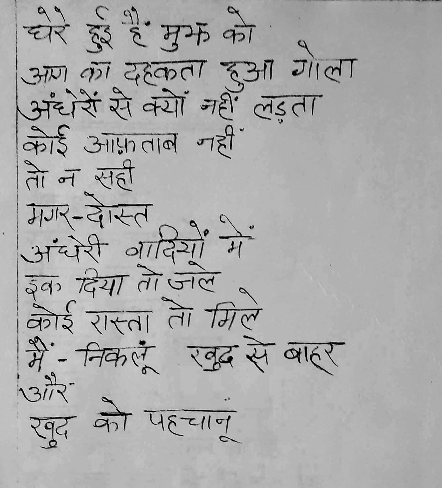
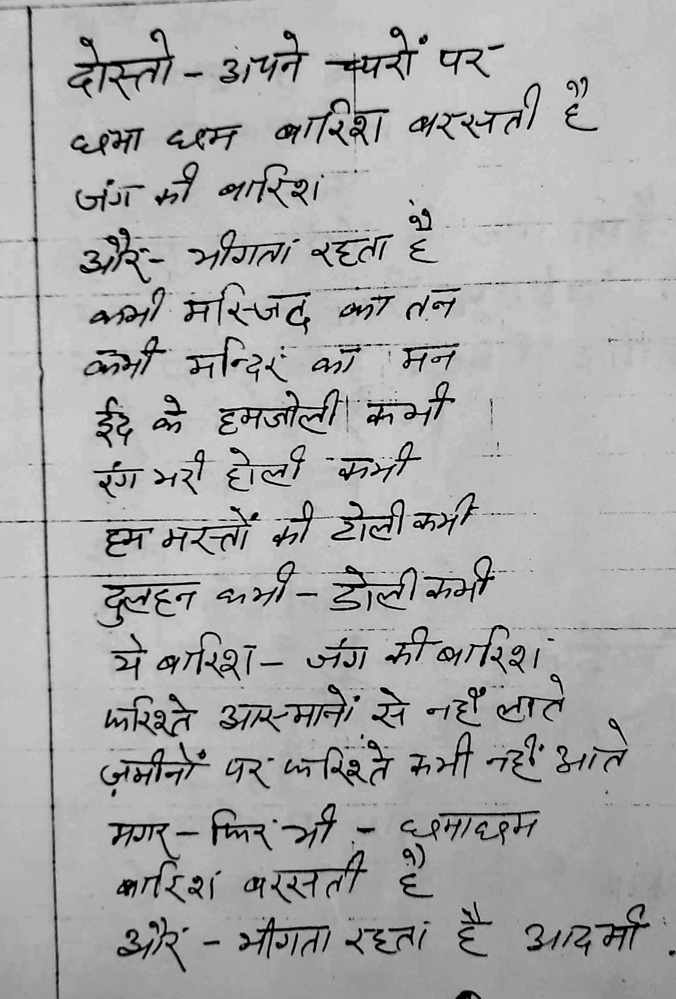
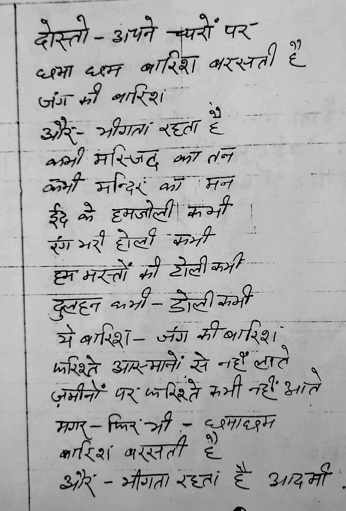
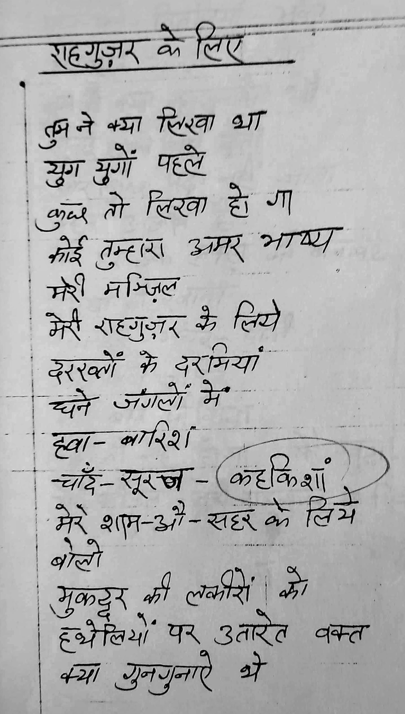
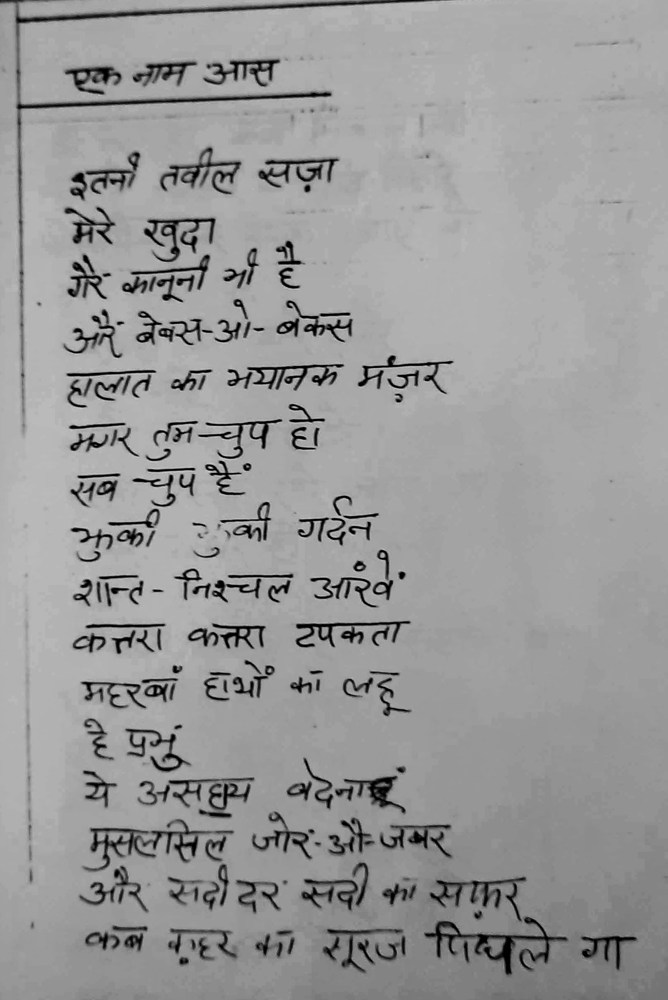
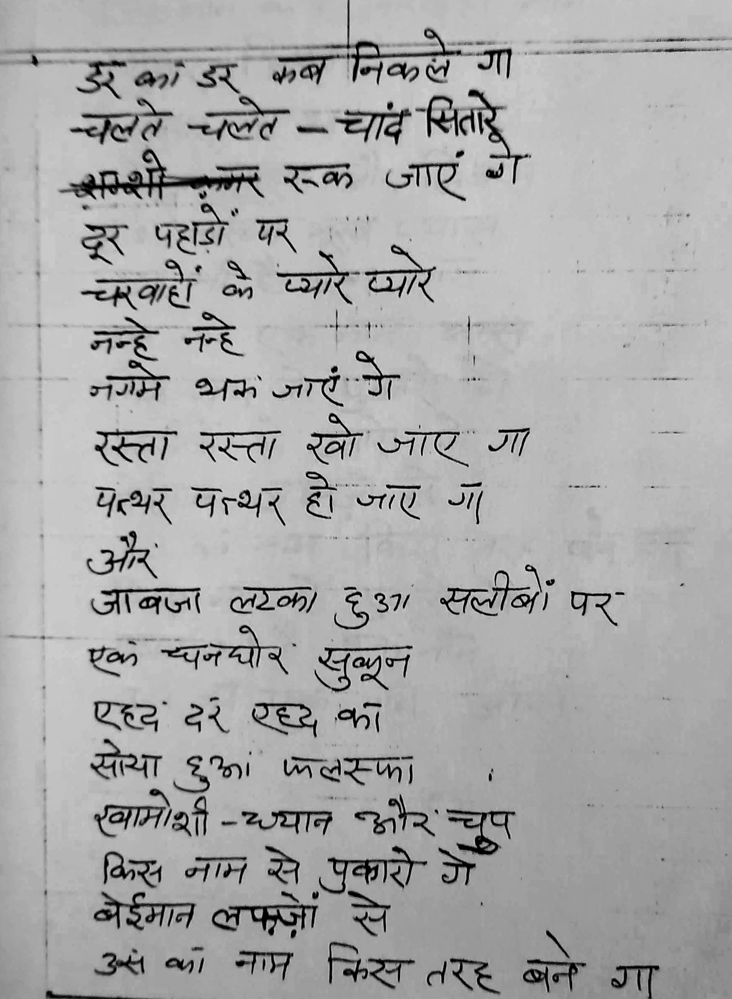
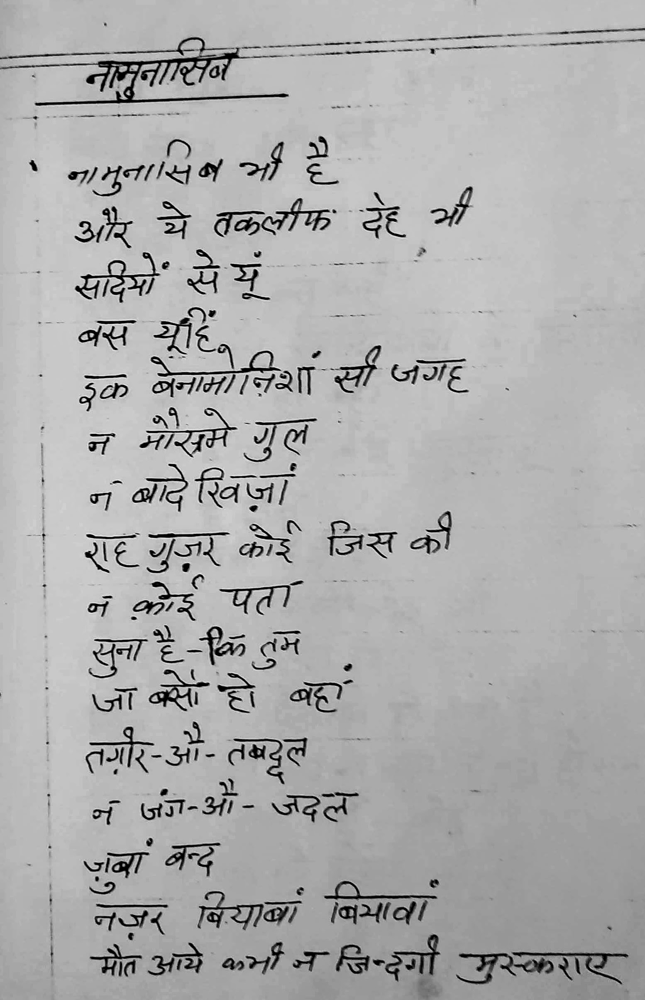
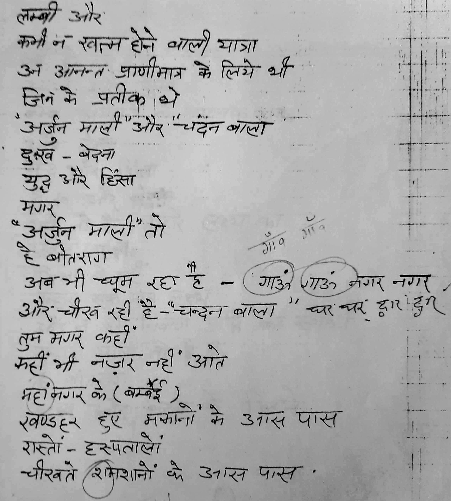
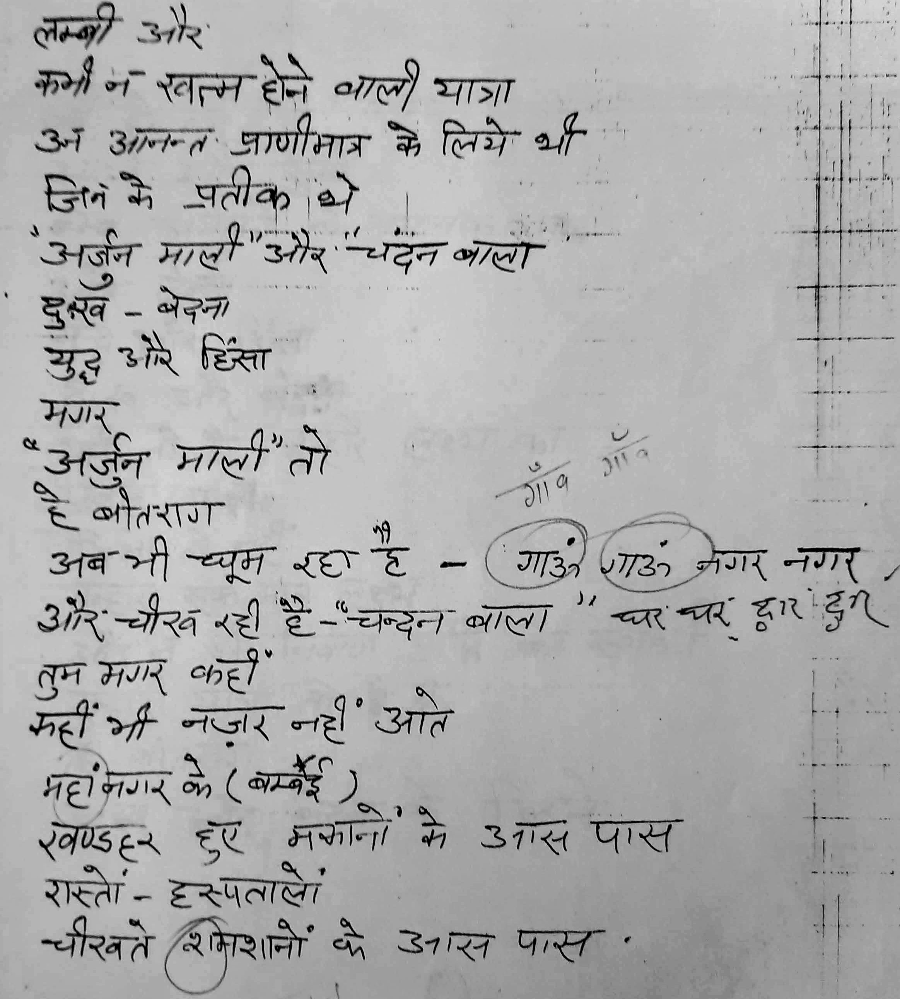

Jnaab Madan Maholvi (1936 - 2005) , was my father and ustaad. I learnt the taste of Urdu Shayri from him . An accomplished painter , sculptor and poet : Madan Maholvi was at ease and regular practitioner of multiple art forms. A student of Shimla Fine Arts college , he practiced and taught these art forms to high schoolers , under grads and teachers through his life.
Haryana Urdu Academy published his Shayri in three covers.
A masters in history and an analyst of religion, he also has huge unpublished work on "Jain Dharma in Haryana"
This online resource is a collection of his published and unpublished work .. Mostly poems and short stories ..
Fikr Ke Parinde

Published in 1989 in Devnagri script, this books is a collection of his chosen poems. The book was forwarded by Shri Khushi Ram Sharma Vashisht, then Rajya Kavi of Haryana - India. Book received critical acclaim in the local circles of Hindi & Urdu poetry. Publishing Urdu poetry in Hindi (Devnagri) script was a bold move for that time. In a way it opened the door for non Urdu natives to a new and distinct style of poetry - Nazm.
In the words of Shri Krishna chandra Paagal , a local Hindi writer and a member of Adbi sangam Kurukshetra
जगह जगह जिंदगी की सच्चाइयों, सुख-दुःख, कलह, उग्रवाद, मानवीय मूल्यों का बिखराव तथा वर्तमान की भयानक चुनौतियों के सजीव चित्र घंटों अपनी ओर देखने को मज़बूर करते हैं । सिद्धहस्त चित्रकार के सजीव रंग तथा कवि की कोमल अनुभूतियों का अनूठा सम्मिश्रण दिल की गहराइयों में अनायास ही उतरता चला जाता है
Rasta Tau Mile

This is a collection of 43 poems written in a specific style of Urdu Poetry called Nazm. A Nazm is a free flowing text that explores one specific feeling or emotion. It can be topical and imbibe certain flow but the writer is free to choose or ignore the rhythm. Nazm represents a freedom from the rule based poetry. The idea is to have the writer as much leeway as she needs to express a thought. That is the reason Nazm was proclaimed to be the voice of progressive Tarakki Yafta poets. It was embraced by likes of Kaifi Azmi in his early days as an expression of the progressive movement.
The book is about self discovery. Poet seeks himself amidst the chaotic eighties of India - a struggle between hope and failures , the growing pains of the society as much as within.
In a way the poetical format - Nazm is a very apt choice for the topic at hand "Show me the path" . He is judicious with the words without compromising the freedom of the medium.
Creative commons and open source credits
This work is under creative commons licence. You are free to use , copy , redesign any which you you like as long as you visibly attribute the original as under
Title
Fikr Ke ParindeorRasta Tau Mileby Madan Maholvi (poems.shutri.com)Licensed under Creative Commons: By Attribution 3.0
http://creativecommons.org/licenses/by/3.0/
- The online presentation of the book is through an "open source" documentation tool "mdbook". You may click on three horizontal bars at the top left corner of the screen to open a side panel to access the poems sorted in a index style.
- The open access project is hosted at Github
Contributions
Please feel free to visit the repository at Github — the second icon from top left. You may raise issues if you see any technical or literary discrepancies.
I am looking for help to translate these poems in other languages - particularly in English. I will provide technical assistance and publishing support with due recognition for your help as a contributor. If you have a taste for the poetry and command on other languages , please contact me through email
And more importantly please spread the word for these amazing poems. I truly feel they deserve a wider audience.
~Ashutosh~


ख्याल की कोंपल
कोई आफताब¹ चमके
न--कोई माहताब² जागे
मगर इतना तो हो
ऐ खुदा
फूटे किसी ख्याल की कोंपल
किसी महक का जन्म हो
वीरान सालों की मौत से पहले
जिन्दगी की नमनाक³ आंख में
मेरे खाब का नक्श-ए-पा⁴
ऐ खुदा,
न रास्ता बने न राहनुमा⁵
मगर कुछ देर देरपा⁶ तो हो
हमराह किसी राहगीर के
कुछ दूर तो चले-पल दो पल
फूटे किसी ख्याल की कोंपल
किसी महक का जन्म हो ।
.. 1. सूर्य 2. चन्द्रमा 3. भीगी 4. पद चिह्न
.. 5. पथ-प्रदर्शक 6. स्थायीं
Khyaal Kee Kompal
Koi Aaftaab1 Chamke
Na Koi Mahtaab2 Jaage
Magar Itna Tau Ho Ae Khuda
Foote Kisi Khyaal Kee Kompal
Kisi Mehak Kaa Janm Ho
Veeraan Saalon Kee Mout Se Pehle
Jindagi kee namnaak4 aankh mein
Mere Khwaab Kaa Nakshe-Paa5
Ae Khuda
Na rasta bane, na rehnuma5
Magar kuch der, der-paa6 tau ho
Humraah kisi raahgeer ke
Kuch der tau chale pal dau pal
foote Kisi khyaal kee Kompal
Kisi mehek kaa janm ho.
.. 1. Sooraj 2. Chandrma 3. Bheegi 4. Pad Chinh
.. 5. Path-Pradarshak 6. Sthayi
मेरा साया
दौड़ कर चलो
दरवाजे बन्द कर लो
डी-सी-एम के मोटे
गहरे रंगों वाले पर्दे
खिड़कियों पर गिरा दो
चिटखनी चढ़ा दो
क्योंकि बाहर आम रास्तों पर
कुछ लोग
बन्दूकें लिए घूमते हैं।
गोलियां चलाते हैं
कहकहे लगाते हैं
आदमी चुप हैं
माहौल इस कदर भयानक है
आदमी मरते हैं
आदमी चुप हैं
यहां तक कि
इबादतगाहों १
खुदा की पनाहों २ में
मौत मुस्कराती है
कहक़हे लगाती है
आदमी चुप हैं
बेजुबां गोलियां चीखती हैं
ये हसीं दुनिया जैसे एक मक़तल ३ हो
दौड़ कर चलो
दरवाजे बन्द कर लो
लगता है जैसे कोई आया है
नहीं
------ये तो मेरा साया है
भयानक है बहुत वक्त की तस्वीर मदन ।
आँख नहीं मिलती जलते हुए मंजर ४ से ॥
१ - मंदिर ; २ - शरण ; ३ - क़त्ल करने का स्थान ;
४ - दृश्य
Mera Saya
Daud kar chalo
Daravāje banda kar lo
D C M ke moṭe
Gahare rangoan vāle parde
Khiḍakiyoan par girā do
Chiṭakhanī chaḍhaā do
Kyoanki bāhar ām rāstoan par
Kuchh log
Bandūkean lie ghūmate haian
Goliyāan chalāte haian
Kahakahe lagāte haian
Ādamī chup haian
Māhaul is kadar bhayānak hai
Ādamī marate haian
Ādamī chup haian
Yahāan tak ki
Ibādatagāhoan 1 mean
Khudā kī panāhoan 2 mean
Maut muskarātī hai
Kahakahe lagātī hai
Ādamī chup haian
Bejubāan goliyāan chīkhatī haian
Ye hasīan duniyā jaise ek maktal 3 ho
Dauḍ kar chalo
Daravāje banda kar lo
Lagatā hai jaise koī āyā hai
nahīan
------ye to merā sāyā hai
Bhayānak hai bahut vakta kī tasvīr madan ।
Āankhe nahīan milatī jalate hue manjar 4 se ॥
1- Mandir ; 2 - Sharan ; 3 - Katl Karne Ka Sthaan ;
4 - Drishya
बँटवारा
तुम चाहते होहम तुम जुदा हो जाएं
ये आंगन ये घर बांट लें
ये खेत खलिहान
शीशम के धने पेड़
कुछ में काट लूँ
कुछ तुम काट लो
ये मद मस्त नदियां
ये सरसब्ज़' जंगल
पहाड़ों की चोटियां
सब बांट लें
हजारों मील लम्बी दीवार गर नहीं मुमकिन
तो चलो इक लकीर खेंच लेते हैं
तुम चाहते हो गाँव गाँव बँट जाए
शहर शहर बांट लें
ये आंगन ये घर बांट लें
तुम जो कहते हो शायद ठीक ही कहते हो
अब-निबाह२ नहीं हो सकता
ये जमीं
चश्मे
गीत गजलें
दूर तक फैले मुरव्वत३ के रिश्ते
अगर तुम चाहते हो चलो बांट लो
शीशम के घने पेड़
कुछ मैं काट लूँ
कुछ तुम काट लो
लेकिन
वह अपना बूढ़ा बाप
वह जो कई सदियों से
दुनिया के दूर-ओ-दराज खित्तों४ पर
प्रेम और भाई चारे का
अमन और दोस्ती का
महब्बत की रोशनी का
पैगाम५ लेकर गया हुआ है
लौट कर आएगा
उसके हम उम्र बरगद ६ मर चुके होंगे
दूर दूर तक
दरख्तों के साये नहीं होंगे
वह कहां बैठेगा
दीवार के साये तले?
तुम आओगे
में नहीं आऊँगा
मैं आऊंगा
तुम नहीं आओगे
चांदनी रात में बाप के गिर्द बैठे
हज़ारों बेटे
हजारों बेटियाँ
जब यह बताएंगी--कि
हम तुम जुदा हो गए हैं
सैकड़ों साल बूढ़ा बाप
ऐन७ मुमकिन है कि मर जाए
बूढ़े बाप का जिस्म
हड्डियां-लहू-आंखें
सब बांट लेंगे
मगर
प्यार-ओ-महब्बत का फलसफा ७
अमन और दोस्ती का रिश्ता
किस तरह बंटेगा
तुम चाहते हो
हम तुम जुदा हो जाएं
गांव गांव बँट जाएँ
शहर शहर बाँट लें
ये आंगन ये घर बांट लें
१- हरा भरा; २- निर्वाह ; ३- प्यार
४- हिस्सों ; ५-संदेश ; ६- वट वृक्ष
७- पूर्णरूपेण ; ८- दर्शन
Bantawra
Tum chāhate ho
Ham tum judā ho jāean
Ye āangan ye ghar bāanṭa lean
Ye khet khalihān
Shīsham ke ghane ped
Kuchh mean kāṭ loon
Kuchh tum kāṭ lo
Ye mad masta nadiyāan
Ye sarasabja़' jangal
Pahāḍaoan kī choṭiyāan
Sab bāanṭ lean
Hajāroan mīl lambī dīvār gar nahīan mumakin
To chalo ik lakīr kheancha lete haian
Tum chāhate ho gāँv gāँv baँṭ jāe
Shahar shahar bāanṭa lean
Ye āangan ye ghar bāanṭa lean
Tum jo kahate ho shāyad ṭhīk hī kahate ho
Aba-nibāha2 nahīan ho sakatā
Ye jamīan
Chashme
Gīt gajalean
Dūr tak faile muravvat3 ke rishte
Agar tum chāhate ho chalo bāanṭa lo
Shīsham ke ghane ped
Kuchh maian kāṭ loon
Kuchh tum kāṭ lo
Lekin
Vah apanā būḍhaā bāp
Vah jo kaī sadiyoan se
Duniyā ke dūra-o-darāj khittoan4 para
Prem aur bhāī chāre kā
Aman aur dostī kā
Mahabbat kī roshanī kā
Paigām5 lekar gayā huā hai
Lauṭ kar āegā
Usake ham umr baragad6 mar chuke hoange
Dūr dūr tak
Darakhtoan ke sāye nahīan hoange
Vah kahāan baiṭhegā
Dīvār ke sāye tale?
Tum āoge
Mean nahīan āūँgā
Maian āūangā
Tum nahīan āoge
Chāandanī rāt mean bāp ke gird baiṭhe
hazaron beṭe
Hajāroan beṭiyāँ
Jab yah batāeangī--ki
Ham tum judā ho gae haian
Saikaḍa़oan sāl būḍha़ā bāp
Aina7 mumakin hai ki mar jāe
Būḍha़e bāp kā jism
Haḍḍiyāan-lahū-āankhean
Sab bāanṭa leange
Magar
Pyāra-o-mahabbat kā falasafā7
Aman aur dostī kā rishtā
Kis tarah banṭegā
Tum chāhate ho
Ham tum judā ho jāean
Gāanva gāanva baँṭ jāeँ
Shahar shahar bāँṭ lean
Ye āangan ye ghar bāanṭa lean
1- harā bharā; 2- nirvāh ; 3- pyār
4- hissoan ; 5-sandesh ; 6- vaṭ vṛukṣha
7- pūrṇarūpeṇ ; 8- darshan
तू आएगी कैसे
रात के अंधेरे में
चुपके चुपके हौले हौले
तू आएगी
तो आएगी कैसे
इक रात है अंधेरी
पुर पेच१ राहों पे
पत्थर हैं काँटे हैं
साये भूत से दरख़्तों के
खड़ाके खुश्क खुश्क पत्तों के
हवा के तेज तेज झोंके
आँचल से लिपट कर
तेरी राह रोकेंगे
तू आएगी -- आएगी कैसे
सुनसान सड़कों पर
बियाबान सड़कों पर
शहर के आवारा कुत्ते
कुत्तों की सदाएँ २
ख़ौफ़ ३ जी पे छाएगा
पाँव लड़खड़ाएंगे
तू आएग़ी
आएगी कैसे ?
यूँ तो
तेरे और मेरे दरमियाँ
थोड़ा सा फ़ासला है
मगर मेरे गिरदो नवाह ४ , दूर तक
टूटे फूटे झोंपड़ों का लम्बा सिलसिला है
उरियाँ ५ नीम-उरियाँ ६ बदन
बौसीदा ७ हड्डियाँ
हड्डियों के जिस्म
बेनूर चेहरे
बुझी बुझी सी आँखें
मुफ़लिसों ८ के जमघट हैं
गोया ९ हसरतों १० के पनघट हैं
हज़ारों फ़ाकाकश ११ मासूम बच्चे
मेरे आसपास रहते हैं
मुझे अपना समझते हैं
गुजर कर इन तंग़ो-तारीक१२गलियों से
तू आएगी
मेरे ख़यालों की परी
बहुत मुश्किल सा लगता है
मगर
ना जाने क्यों फिर भी
दीये की कांपती सी लो कहती है
तू आएगी
तू ज़रूर आएगी
१- टेढ़ी मेढ़ी; २- आवाज़ें ; ३- डर ;
४- आसपास ५- नग्न ; ६- अर्ध नग्न ;
७- जीर्ण शीर्ण ८- निर्धनों ; ९- जैसे की ;
१०- इच्छाओं; ११- भूखे ; १२- संकरी और अंधेरी
Tu Aaygi Kaise
Rāt ke andhere mean
Chupke chupke haule haule
Tū āeygī
To āeygī kaise
Ik rāt hai aandherī
Pur pech1 rāhoan pe
Patthar haian kānṭe haian
Sāye bhūt se darakhatoan ke
Khaḍaāke khushk khushk pattoan ke
Havā ke tej tej zoanke
Āaanchal se lipaṭ kara
Terī rāh rokeange
Tū āeygī -- āeiygī kaise
Sunasān saḍakoan par
Biyābān saḍakoan par
Shahar ke āvārā kutte
Kuttoan kī sadāen2
Khauf3 jī pe chhāyegā
Pāanv laḍakhaḍaāeange
Tū āeygaī
Āeygī kaise ?
Yūँ to
Tere aur mere daramiyāँ
Thoḍaā sā faāsalā hai
Magar mere girdo-navāh4 , dūr tak
Ṭūṭe fūṭe zhompaḍoan kā lambā silasilā hai
Uriyāँ 5 nīm-uriyāँ 6 badan
Bausīdā 7 haḍḍiyāँ
Haḍḍiyoan ke jism
Benūr chehare
Buzī buzī sī āँkhean
Mufa़lisoan 8 ke jamaghaṭ haian
Goyā 9 hasaratoan 10 ke panaghaṭ haian
Hajaāroan faākākash 11 māsūm bachche
Mere āsapās rahate haian
Muze apanā samazate haian
Gujar kar in tango-tārīk12 galiyoan se
Tū āegī
Mere khayāloan kī parī
Bahut mushkil sā lagatā hai
Magar
Nā jāne kyoan fir bhī
Dīye kī kāanmpatī sī lo kahatī hai
Tū āegī
Tū jarūr āegī
1- Tedhi Medhi; 2- Aavazon; 3- Dar;
4- Aaspaas; 5- Nagn; 6- Ardh Nagn;
7- Jeern Sheern; 8- Nirdhanon; 9- Jaise Kee;
10- Ichaon; 11- Bhookhe; 12- Sankari aur Andheri;
रतजगों का मौसम
रतजगों का मौसम है
आओ हम भी
एक रात, पलकों पर गुजार दें।
कोई साज'
तुम
उठाओ
कोई साज मैं
एक गीत गुनगुनाऊं मैं
एक गीत तुम
सर-ए-राह² कहीं पत्थरों पे बैठकर
पत्थरों से बात हो
बस इस तरह तमाम रात हो
रात बस
एक रात छोड़ दें
जहरीले नाग
अपना चलन³
बादलों में डूब जाएँ
हसीं आरज़ूओं⁴ के बदन
दूर तक हलकी हलकी
अधखिली कलियों की महक
जाम हों छलके हुए
कदम हों बहके हुए
किनारे तोड़ कर बहने लगे
मदिरा की नदी
मन की चाहत
तन की हाजत⁵
डूब कर बह जाए
गुनाहों की मुकम्मिल⁶ इक सदी
रात इक सदी⁷ की रात है
रात
इस युग की आखरी हो रात
और शायद
अपनी मुलाकात भी दोस्त !
तेज से तेजतर कर दो
गीतों की सदा⁸
पत्थर सभी पिघलें
सभी जल जाएं
न मन्दिर बचे कोई
न गिरजा, न गुरुद्वारा
हवाओं में घुल मिल जाए
मस्जिद का हर एक मीनारा
चांदनी रातें
बेल, बूटे, पहाड़
खुदानुमा⁹ पत्थर
जवां दिलकश¹⁰ बहारें
सब पुकारें
आने वाले कल से
कोई रिश्ता न हो
इस रात का
ये बदी की रात है।
इक सदी की रात है
आओ पलकों पर गुजार दें
कोई साज तुम उठाओ
कोई साज मैं
रतजगों का मौसम है
तेज से तेजतर कर दो गीतों की सदा
1 -वाद्ययन्त्र; 2- पथ के किनारे; 3- चरित्र;
4- सुन्दर इच्छाओं; 5- आवश्यकता; 6- पूर्ण;
7- शताब्दी; 8- आवाज; 9- ईश्वर सदृश्य;
10- दिल लुभाने;
Ratjagon Ka Mausam
Ratajagoan kā mausam hai
Āo ham bhī
Ek rāta, palakoan par gujār dean।
Koī sāj'
Tum
Uṭhāo
Koī sāj maian
Ek gīt gunagunāūan maian
Ek gīt tum
Sara-e-rāha² kahīan pattharoan pe baiṭhakara
Pattharoan se bāt ho
Bas is tarah tamām rāt ho
Rāt basa
Ek rāt chhoḍ dean
Jaharīle nāg
Apanā chalan³
Bādaloan mean ḍūb jāeँ
Hasīan āraja़ūoan⁴ ke badan
Dūr tak halakī halakī
Adhakhilī kaliyoan kī mahak
Jām hoan chhalake hue
Kadam hoan bahake hue
Kināre toḍa़ kar bahane lage
Madirā kī nadī
Man kī chāhata
Tan kī hājata⁵
Ḍūb kar bah jāe
Gunāhoan kī mukammil⁶ ik sadī
Rāt ik sadī⁷ kī rāt hai
Rāt
Is yug kī ākharī ho rāt
Aur shāyad
Apanī mulākāt bhī dost !
Tej se tejatar kar do
Gītoan kī sadā⁸
Patthar sabhī pighalean
Sabhī jal jāean
Na mandir bache koī
Na girajā, n gurudvārā
Havāoan mean ghul mil jāe
Masjid kā har ek mīnārā
Chāandanī rātean
Bel, būṭe, pahāḍ
Khudānumā⁹ patthar
Javāan dilakasha¹⁰ bahārean
Sab pukārean
Āne vāle kal se
Koī rishtā n ho
Is rāt kā
Ye badī kī rāt hai।
Ik sadī kī rāt hai
Āo palakoan par gujār dean
Koī sāj tum uṭhāo
Koī sāj maian
Ratajagoan kā mausam hai
Tej se tejatar kar do gītoan kī sadā
1 -vādyayantr; 2- path ke kināre; 3- charitr;
4- sundar ichchhāoan; 5- āvashyakatā; 6- pūrṇa;
7- shatābdī; 8- āvāj; 9- īshvar sadṛushya;
10- dil lubhāne;
तुम ख़ुदा भी हो
तुम खुदा भी हो
और ये शायद
इस क़दर जरुरी भी नहीं
हजूर तुम साफ क्यों नहीं कहते
खुदा कि तुम खुदा भी हो
तेरा नाम लेकर, हर बात हो
दिन खत्म हो
रात की शुरूआत हो
मगर क्यों नहीं कहते
तुम मयकशों¹ के साथ रहते हो
कभी सागर कभी मीना² कभी साकी³
और ये मयखाना⁴ भी तेरा है
ऐशगाहों⁵ में तुझे अक्सर
महव-ए-रक्स⁶ देखा है
लोग कहते हैं- मगर
तुम-इन सब से जुदा भी हो
खुदा कि तुम खुदा भी हो
जमना के किनारे घूमते
हो बे-नयाजो⁷ ओ बे-फिक्र
लगता है ग्वालों से तेरा
कोई रिश्ता भी है
इन सभी के बीच शायद
इक तेरी राधा भी है
आंखों में बसे
सपनों की तरह
तुझे अपना समझते हैं
वो अपनों की तरह
भंवरे-फूल-कलियां
जमना-रेत और माटी
तुम सब में बसते हो
जलजले⁸ तूफां-आंधियां,
मैदाने जंग
गुरु-भाई और बेटे
तीर-शंख-नाद, और
जंग के सुर्ख
बादल भी तेरे हैं
लड़ो और
तुम खुद भी लड़ते हो
अमल⁹ को अव्वल¹⁰ समझते हो
मिटाते हो कभी
कभी खुद तामीर¹¹ करते हो
मंजिल भी मुसाफिर भी
तुम रहनुमा¹² भी हो
खुदा कि तुम खुदा भी हो
बरग -ओ-बार¹³
ये शजर¹⁴
नदियां-आबशार¹⁵
समुन्दर-चांद और ज़मी
उजड़े हुए मकां
टूटे हुए यकीं¹⁶
मुझ में और
मेरे फनकार में
जब तुम-खुद ही, तो हो मकीं ¹⁷
तो फिर- हुजूर
साफ क्यों नहीं कहते
और ये शायद
इस क़दर जरुरी भी नहीं कि
हाथ उठें और दुआ भी हो
खुदा कि तुम खुदा भी हो ।
1- शराबियों; 2- शराब का पात्र;
3- मधुबाला; 4- मधुशाला ;
5- विलास का स्थान; 6- नाच में लीन;
7- निर्लिप्त; 8- भूकंप ;
9- कर्म ; 10- मुख्य; 11- बनाना ;
12- रहनुमा ; 13-पत्ते और फल 14- वृक्ष ;
15- झरना ; 16-विश्वास ; 17- रहना
Tum Khuda Bhi Ho
Tum khudā bhī ho
Aur ye shāyada
Is ka़dar jarurī bhī nahīan
Hajūr tum sāf kyoan nahīan kahate
Khudā ki tum khudā bhī ho
Terā nām lekar, har bāt ho
Din khatma ho
Rāt kī shurūāt ho
Magar kyoan nahīan kahate
Tum mayakashoan¹ ke sāth rahate ho
Kabhī sāgar kabhī mīnā² kabhī sākī³
Aur ye mayakhānā⁴ bhī terā hai
Aishagāhoan⁵ mean tuze aksar
Mahava-e-raksa⁶ dekhā hai
Log kahate haian- magar
Tuma-in sab se judā bhī ho
Khudā ki tum khudā bhī ho
Jamanā ke kināre ghūmate
Ho be-nayājo⁷ o be-fikra
Lagatā hai gvāloan se terā
Koī rishtā bhī hai
In sabhī ke bīch shāyad
Ik terī rādhā bhī hai
Āankhoan mean base
sapanoan kī tarah
Tuze apanā samazate haian
vo apanoan kī taraha
Bhanvare-fūla-kaliyāan
jamanā-ret aur māṭī
Tum sab mean basate ho
Jalajale⁸ tūfāan-āandhiyāan,
maidāne janga
Guru-bhāī aur beṭe
Tīr-shankha-nād, aur
Janga ke surkha
bādal bhī tere haian
Laḍa़o aur
Tum khud bhī laḍa़te ho
Amal⁹ ko avval¹⁰ samazate ho
Miṭāte ho kabhī
Kabhī khud tāmīr¹¹ karate ho
Manjil bhī musāfir bhī
Tum rahanumā¹² bhī ho
Khudā ki tum khudā bhī ho
Barag -o-bār¹³
Ye shajar¹⁴
Nadiyāan-ābashār¹⁵
Samundar-chāand aur jamīn
Ujaड़e hue makāan
Ṭūṭe hue yakīn¹⁶
Muz mean aur
Mere fanakār mean
Jab tuma-khud hī, to ho makīn ¹⁷
To fir- hujūr
Sāf kyoan nahīan kahate
Aur ye shāyad
Is ka़dar jarurī bhī nahīan ki
Hāth uṭhean aur duā bhī ho
Khudā ki tum khudā bhī ho ।
1- sharābiyoan; 2- sharāb kā pātr;
3- madhubālā; 4- madhushālā ;
5- vilās kā sthān; 6- nāch mean līn;
7- nirlipt; 8- bhūkanmp ;
9- karma ; 10- mukhy 11- banānā ;
12- rahanumā ; 13-patte aur fal
14- vṛukṣha ; 15- zharanā ;
16-vishvās ; 17- rahanā
मैं हूँ
रेस्तोरों¹ के खुशनुमा हाल में
भीड़ भरे रस्तों पर
दुकानों सिनेमा घरों
गलियों के पुरपेच² जाल में
बसों
रेलवे अस्टेशनों पर
कचहरी
सचिवालय
खेत-खलियान
बागों में खेलते हुए
फुटपाथ पर चलते
दर्सगाहों³ में
खुदा की पनाहों में
छत-आंगन-दरवाजे
घर के अन्दर
एक शोला लपकता है
एक जिस्म
हिन्दु का जिस्म
मुस्लमां का जिस्म
सिख का जिस्म
एक जिस्म
कटे हुए दरख्त की तरह
गिरता है
मरने वाला कौन है ?
हर एक पूछता है
मगर
मुझे लगता है-कि मैं हूँ
इक दीया हूं किसी कुटिया में जलाओ मुझको ।
अच्छा नहीं लगता सर-ए-बज्म⁴ फरोजां⁵ रहना ।
1- होटल; 2-टेढ़ी मेढी; 3-विद्यालयों;
5-महफिल में; 6-चमकना अर्थात जलना;
Main Hoon
Restoran¹ ke khushanumā hāl mean
Bhīd bhare rastoan par
Dukānoan cinemā gharoan
Galiyoan ke purapech² jāl mean
Bason
Railway stations par
Kachaharī
Sachivālaya
Kheta-khaliyān
Bāgon mean khelte hue
Footpath par chalate
Darsagāhon³ mean
Khudā kī panāhon mean
Chhat-āangana-daravāje
Ghar ke andar
Ek sholā lapakatā hai
Ek jism
Hindu kā jism
Muslamāan kā jism
Sikh kā jism
Ek jism
Kaṭe hue darakhta kī tarah
giratā hai
Murne vālā kaun hai ?
Har ek pūchhatā hai
Magar
Muze lagatā hai-ki maian hūँ
Ik dīyā hūan kisī kuṭiyā mean jalāo muzako
Achchhā nahīan lagatā sara-e-bajm⁴ farojāan⁵ rahana
1- Restaurant; 2-ṭeḍh़ī meḍhī; 3-schools;
5-mahafil mean; 6-chamakanā arthāt jalanā;
वातायन
फिक्र के परिन्दे शीर्षक संग्रह मदन की उर्दू कविताओं का प्रथम संग्रह है। हर्ष का विषय है कि कवि इसे नागरी लिपि में प्रकाशित करवा रहा है। हमें आशा है कि इस से उस के पाठकों के क्षेत्र की व्यापकता में आशानुकूल वृद्धि होगी और विशाल हिन्दी-प्रेमी जन समूह इस का रसास्वादन कर सकेगा ।
संग्रह की अधिकांश कविताओं में कवि मदन जैन समसामयिक समस्याओं तथा ज्वलन्त प्रश्नों से जूझता दिखाई देता । पड़ोसी राज्य में घटित होने वाली दुःखद घटनाओं, बदली हुई अन्तर्राष्ट्रीय परिस्थितियों तथा राजनैतिक और सामाजिक परिवेश - सब का जायजा लेता हुआ दृष्टिगत होता है ।
आज का माहौल इतना भयानक हो गया है मनुष्य अपने साये से भी भयभीत है। संग्रह की कि अनेक कविताओं में संशय, भय, संत्रास-जन्य परिस्थि तियों के कई वास्तविक चित्र उभर कर सामने आते हैं। कवि को शब्द-चित्रों द्वारा अपनी बात कहने मे यथेष्ट सफलता मिली है। उस के कई चित्र हृदय-पटल पर अंकित होकर दीर्घकाल के लिए अपनी छाप छोड़ने में सफल हुए हैं।
एक चित्र देखिए :
माहौल किस क़दर भयानक है।
आदमी मरते हैं।
आदमी चुप हैं
यहाँ तक कि इबादतगाहों में
ख़ुदा की पनाहों में
मौत मुस्कराती है कहकहे लगाती है।
आदमी चुप हैं बेजुबां गोलियाँ चीखती हैं
ये हसीं दुनिया जैसे एक मकतल हो
लगता है जैसे कोई आया है
नहीं यह तो मेरा साया (मेरा साया)
"बँटवारा" शीर्षक रचना इस संग्रह की सर्व श्रेष्ठ रचनाओं में से एक है। बँटवारे की आशंका मात्र से कवि का व्यग्र तथा उद्विग्न हो उठता है । यह विशाल देश सारे का सारा अपना है। खेत खलिहान, शीशम के पेड़, मदमस्त नदियां सरसब्ज जंगल, पहाड़ों की चोटियाँ किस किस चीज का बँटवारा होगा। गांव-गाँव, घर-घर शहर शहर कैसे बॅट सकेंगे ? जमीन, चश्में, गीत-गजलें कैसे बॅट सकेंगी-सब ! और जब वह बूढ़ा बाप जो विश्व भर में अमन और शान्ति का पैग़ाम लेकर गया हुआ है लौटकर आएगा तो क्या देखेगा ? यही न कि हम तुम जुदा हो गए हैं। हम बूढ़े बाप का जिस्म, हड्डियाँ, लहू, आँखें सब बाँट लेंगे ।"
"मगर
प्यार और मुहब्बत का फलसफा
अमन और दोस्ती का रिश्ता
किस तरह बँढेगा !" --"बँटवारा"
संग्रह की अधिकांश रचनाएँ विचारोत्तेजक है। मदन जैन को इस भयानक माहौल में भी मनुष्य की महानता पर गर्व है। अफ्रीका के लोगों के साथ साथ वह भी दस मील लम्बी दौड़, दौड़ रहा है ।
देखिए :
"मैं और
मेरे अन्दर जो एक शायर है।
तेरे साथ साथ भाग रहे हैं।
दस मील लम्बी दौड़ ही नहीं
बल्कि बहुत लम्बी दौड़
कुरुक्षेत्र के मैदाने जंग से
तेरे जलते हुए सहराओं तक
लगातार
शाम-ओ सहर"
(कुरुक्षेत्र के मैदान-ए-जंग से)
मास्को से अमन का संदेश देने वाले विश्व के महान नेता मिखाइल गोर्वाचेव के नाम लिखित कविता की निम्न लिखित पंक्तियाँ विशेष रूप से पठनीय हैं जिनमें कवि ने मनुष्य की महानता को स्वीकार किया है :
तुम इक आदमी हो
और हर आदमी के लिए
जिन्दगी के लिए
उम्मीद के हसीं पलों की तरह हो
बेकरां समन्दर, बेबादबां कश्तियाँ,
आंधियाँ
गिरदाब-ए-बला में
तुम साहिलों की तरह हो
(अज़ीमतर)
कवि देश के कोटि-कोटि, दीन हीन, बेसहारा अर्द्धनग्न लोगों को कभी विस्मृत नहीं कर सका । -
देखिए
मेरे गिरद-ओ-नवाह दूर तक
टूटे फूटे झोंपड़ों का लम्बा सिलसिला है।
उरियाँ नीम-उरियाँ बदन वोसीदा हड्डियाँ
हड्डियों के जिस्म
बेनूर चेहरे
बुझी बुझी सी आँखें
मुफलिसों के जमघट हैं
गोया हसरतों के पनघट हैं
हज़ारों फाकाकश मासूम बच्चे
मेरे आसपास रहते हैं
मुझे अपना समझते हैं
(तू आएगी कैसे)
मदन जैन की भाषा में चित्रात्मकता का बाहुल्य है । कहीं कहीं तो वह कुछ वस्तुओं अथवा प्राकृतिक दृश्यों का नामोल्लेख करके ही एक संश्लिष्ट चित्र निर्मित कर देता है। ऐसा ही एक संश्लिष्ट चित्र देखिए :
रास्ते मोड़
शाम-ओ-सहर
मंजिलें और मुसाफिर
बादे सबा फूल कलियाँ शजर
हसीं शहज़ादियाँ जुल्फे शोख रंग आंचल
मुहब्बत की हर दास्तां
आग की दहकती हुई भट्टियाँ
मजदूर और दहकां
एक इक धमाके से
कौस-ए-कजाह के शोख रंग
और ये सब – सब कुछ
बादलों में घुल जाएंगे ।
(अजीमतर)
मदन जैन जिन्दगी से प्यार करता है, उससे डर नहीं भागता । वह प्यार की एक रात को एक सदी के जीवन से अधिक मूल्यवान समझता है। "रत जगों का मौसम" शीर्षक कविता इस संग्रह की एक सशक्त रचना है। इस की निम्न पंक्तियाँ द्रष्टव्य हैं:
रात
इस युग की आखरी हो रात
और शायद
अपनी मुलाकात भी दोस्त !
इस रचना की चित्रात्मकता भी देखने योग्य है।
मन्दिर का हर एक मीनारा
चाँदनी रातें
बेल, बूटे, पहाड़
खुदानुमा पत्थर
जवां दिलकश बहार
सब पुकारें
आने वाले कल से कोई रिश्ता न हो
इस रात का
'ख्वाब' 'शहर' 'बागी था महावीर' और "क्या नाम दू" - इस संग्रह की कुछ अन्य सशक्त रचनाएँ हैं ।
मदन जैन कला-शिक्षक तथा कला प्रेमी है; अतः उस की रचनाओं का कलात्मक होना स्वाभाविक है। वह जानता है कि अपनी बात कहाँ समाप्त करनी है और उसके बाद वह एक शब्द भी जोड़ना उचित नहीं समझता । अतुकान्त कविता पर कवि का पूरा अधिकार है। कविताओं में प्रवाह के साथ साथ एक आन्तरिक लय विद्यमान रहती है। हमें पूर्ण आशा है कि जैन की कला पर दिन प्रतिदिन और निखार आता जाएगा ।
अन्त में हम इस संग्रह के प्रकाशन पर कवि को हार्दिक बधाई देते हैं तथा उसे विश्वास दिलाते हैं कि उर्दू तथा हिन्दी दोनों भाषाओं के पाठक इस का समान रूप से स्वागत करेंगे । मदन जैन हरियाणा की जदीद उर्दू शायरी में जल्द ही अपना स्थान बना सकेगा और उस की रचनाओं को स्थायित्व प्राप्त हो सकेगा - इस के साथ ही हम इस वक्तव्य को समाप्त करते हैं ।
ज्योतिनगर,
कुरुक्षेत्र,
बुद्ध पूर्णिमा ( सम्बत् २०४६ )
खुशीराम वाशिष्ठ (राज्य कवि हरियाणा)
दृष्टिकोण
मदन जैन का काव्य संग्रह "फिक्र के परिन्दे” पढ़ा। जगह जगह जिंदगी की सच्चाइयों, सुख-दुःख, कलह, उग्रवाद, मानवीय मूल्यों का बिखराव तथा वर्तमान की भयानक चुनौतियों के सजीव चित्र घंटों अपनी ओर देखने को मज़बूर करते हैं । सिद्धहस्त चित्रकार के सजीव रंग तथा कवि की कोमल अनुभूतियों का अनूठा सम्मिश्रण दिल की गहराइयों में अनायास ही उतरता चला जाता है
कहकशां, नाजुक तितलियां
शबनम और सफेद मोती
फूल और खुशबू
या -सरे मिज़गां ठहरा हुआ आँसू
चुप हैं अजंता की बोलती तस्वीरें
शायद यहां जिंदगी लिबास बदलती है।
मंजिलें बहुत करीब हैं शायद
(अल्फ नंगी)
एक और चित्र :
शोर - बूटों के खड़ाके
सोचो साल माह और दिन
जो कयामत के दिन हैं
जिस दिन रूहें कब्रों से निकलेंगी
शायर और ताजर रूहें
बेबस और जाबर रूहें
( फना की तारीख)
काव्य और चित्रकला की सुकुमारता के अतिरिक्त कवि जगह जगह वर्तमान से भी साक्षात्कार करता हुआ दिखाई देता है :
कुछ समझ नहीं आता
कहां से आ गए
लहू रंग बादलों के हुजूम
(लहू रंग बादलों के हुजूम)
दूर दूर तक ताहद्दे नजर
सुर्ख सुर्ख है जमीन का जिस्म
लगता है ख्यालात भी जल जाएंगे
(ख्यालात भी जल जाएंगे)
हिन्दु का जिस्म – सिख का जिस्म
मुस्लमान का जिस्म
एक जिस्म-आदमी का
कटे हुए दरख्त की तरह गिरता है।
मरने वाला कौन है ?
हर कोई पूछता है
मगर- –मुझे लगता है कि—में हूँ ।
(मैं हूँ )
इतिहास के विद्यार्थी श्री जैन ने अपनी कविता का तानाबाना अक्सर धार्मिक एवं ऐतिहासिक वीर पुरुषों के संदर्भों से बुना है । कवि पाठकों को अनेक नगरों, युद्ध स्थलों तथा ऋषि मुनियों के दर्शन करवाता है जैसे महाभारत, कलिंग, सायबेरिया |
सिकन्दर और पोरस का युद्ध, राम और कृष्ण, महावीर, बुद्ध, ईसा, नानक, बाबरो अकबर, नादरो अबदाली, गोर्वाचोव इत्यादि । इतिहास, दर्शन एवं धर्म का काव्यमय चित्रण सचमुच कवि के विस्तृत ज्ञान का परिचायक है, सभी कविताओं में भाव, भाषा, प्रवाह, शैली एवं शब्दचयन का अनूठा सामञ्जस्य दृष्टिगोचर होता है ! प्रत्येक कविता एक बात कहती है; एक नई बात जो सुन्दर भी है और प्यारी भी ! जिस में चिंता और चिंतन के पक्षी असीम ऊँचाइयों तक उड़ानें भरते हुए चाँद, सूरज, कहकशां बिजलियां और एटमी धूल से साक्षात्कार करते हैं और जमीन पर रेत, मिट्टी, फूल-कलियां, शीशम और बटवृक्षों की मीठी शीतल छाया से होकर गुजरते हैं । इन के साथ साथ उड़ता है है सच्चा जागरूक कवि । कवि के साथ उड़ानें भर कर मुझे भी हार्दिक आनन्द मिला है इसके लिए चाहे श्रम भी करना पड़ा है, मुझको ! उड़ानें वास्तव में बहुत ऊँची हैं।
जैन के शब्दों में
आसां नहीं जो पहुँचे तुझ तक कोई 'मदन'
तेरे ख्याल आजकल उकाबों से हो गए ।
मेरे दृष्टिकोण से "फिक्र के परिन्दे" उच्चकोटि का काव्यसंग्रह है जिस के लिए श्री मदन जैन बधाई के पात्र हैं। समस्त साहित्य जगत् इस का स्वागत करेगा । ऐसा मेरा विश्वास है ।
कृष्ण भवन
231/3 सब्जीमंडी-कुरुक्षेत्र
कृष्ण चन्द्र पागल
यात्रा
सातवीं कक्षा को बात है, पहली कहानी लिखी। कहानी सम्भवतः निम्नस्तरीय रही होगी जिस के लिये उत्साह एवं प्रेरणा जैसा कोई शब्द याद नहीं आता, परन्तु मां सरस्वती के चरण कमलों में यह मेरा प्रथम नमन था। यहीं से एक सिलसिला चला साहित्य सेवा का । नवम् कक्षा तक आते आते बहुत बड़े विद्यालय के छात्र सचिव का कार्यभार सँभालने का अवसर प्राप्त हुआ। मंच पर आते ही छात्र, अध्यापक, नगर एवं घर के सभी लोग “मदन फ़रियादि " के नाम को जानने एवं प्यार करने लगे ।
सन् 1951-52 के आसपास पंजाब में साहित्य सभाओं के गठन का एक दौर सा चला। नगर नगर में साहित्य सभाओं का गठन हुआ ! मेरे अग्रज श्री अमृत लाल जैन (आजकल एस. डी. एम. नूरपुर) की अभिरुचि भी लेखन में होने के कारण हमारे नगर (अहमदगढ़) में साहित्य सभा के गठन का गौरव मेरे निवास स्थान को प्राप्त हुआ—इस दैवयोग के बाद उच्च कोटि के कथाकारों तथा कवियों का सम्पर्क प्राप्त होने लगा, मासिक गोष्ठियों और कवि-दरबारों से शौक-ओ-जौक में खूब रंग आने लगा ।
मैट्रिक पास करते ही उच्च शिक्षा प्राप्त करने के लिये सन् 1954 में गव० कालेज मालेरकोटला में प्रवेश लिया। पढ़ाई की अपेक्षा नगर में होने वाले "कुल हिन्द मुशायरों" में अधिक रुचि लेने लगे । शायरी के अदबो आदाब से जानकारी बढ़ने लगी ।
चन्द मुशायरों में पढ़ने का अवसर भी प्राप्त हुआ तथा पंजाब के जानेमाने कवि जनाव नानक चन्द नाज़, अस्तर रिज़वानी, प्रेम वारबर्टनी तथा दर्द नकोदरी साहिब से हल्की सी मुलाकात भी हुई, मगर यह सिलसिला देर तक न चल सका । अचानक फाईन आर्ट की शिक्षा प्राप्त करने का जबर्दस्त दौरा पड़ा और कालेज की पढ़ाई छोड़ कर गवरनमेंट स्कूल आफ आर्ट पंजाब, शिमला में प्रवेश ले लिया। जीवन की प्रत्येक गतिविधि कला और साहित्य को समर्पित कर दी गई ।
फिर उस समय जब, कला की शिक्षा प्राप्त कर शिमला की पहाड़ियों से मैदानों में उतरे तो लगा मानो युद्ध क्षेत्र में उतर आये हों । मध्यवर्ग की सभी विकट समस्याओं ने बाहें फैला कर स्वागत किया । नौकरी की तलाश, दफ्तरों के चक्कर, आर्थिक अभाव, कुण्ठाएँ , भ्रष्टाचार से साक्षात्कार, कोमल अनुभूतियों तथा आकांक्षाओं ने चैन से बैठने नहीं दिया, आखिर बैठते भी तो कहां ?
साये कहां थे राह में जो बैठते "मदन' "
हम ने किये सफर बहुत सख्तियों के साथ ॥
कुरुक्षेत्र में कई वर्षों से गुमनामी की जिन्दगी गुज़ार रहा था कि "आकार" नामी एक स्थानीय संस्था ने मेरी एक कहानी "हडिड्यों का व्योपारी" को पुरस्कृत किया (1985) , इस के साथ ही एक कविता "ख्यालात भी जल जाएंगे" ,"मदन लाल जैन" के नाम से "सशत " हिन्दी मासिक (1986) में छपी ! बस इस के साथ ही कुरुक्षेत्र के साहित्य प्रेमियों की नज़र मुझ पर पड़ी। आदरणीय "दोस्त भारद्वाज साहिब" की कृपा से अदबी संगम कुरुक्षेत्र से जुड़ गया और आज तक जुड़ा हुआ हूँ ।
आभार
फिक्र के परिन्दों को काव्य संग्रह तक की यात्रा पूर्ण करने के लिए जिन प्रियजनों के आशीर्वाद की मीठी घनी छाया मिली उन में हैं श्री खुशी राम जी वाशिष्ठ राज्यकवि हरियाणा, राज्यकवि प्रो० उदय भानु हंस, जनाब साबिर अबोहरी, प्रो० राना गन्नोरी, श्री बाल कृष्ण बेताब, श्री कृष्ण चन्द्र पागल, प्रो० हिम्मत सिंह जैन, श्री दोस्त भारद्वाज, श्री शेखर जैन, श्री जिनेन्द्र कुमार जैन, श्री जगदीश चन्द्र शास्त्री, उर्दू मरकज तथा अदबी संगम कुरुक्षेत्र के सभी मित्र । स्नेह एंव सहायता के लिए "फिक्र के परिन्दे" इन के साथ प्रिय आशुतोष और गुड ओ-मेन् प्रिन्टर्स, कुरुक्षेत्र के भी हार्दिक आभारी हैं ।
और मैं 'मदन जैन' उन अनन्त ख्यालों, घटनाओं, खामोश आंखों, शहरों, जंग के बादलों, परिन्दों, पराग और फूलों के अतिरिक्त सभी ईमानदार संघर्षों का आभारी हूँ जो मुझे कविता बुनने की प्रेरणा देते हैं ।
जैन भवन
विष्णु कालोनी
कुरुक्षेत्र
मदन जैन


Jagta Patthar

Rasta
 

Hum Dono


Us Paar


Khushbu


Lunch Time

Bol Kavi


Lekin
Us Ne


 





 





Yoon Hi Khada Hoon


Kis Liye
 


Ek Kabira